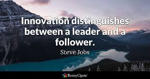

"Being a Leader shows example to his Followers , A Leader is one who knows the way, goes the way, and shows the way."
GOALS being a LEADER:
1.) "To motivate team members, leaders should include them in the goal-setting process. Providing a supportive environment by providing resources such as materials, assistance and information, also can motivate the members of a team. Motivating and providing support to the team should be the goal of leaders. "
2.) Strategic thinking.
Improve my ability to see the big picture and take a longer range, broader business perspective. Learn to step back from the day-to-day tactical details of my business and focus on the “why”, not just the “what” and “how”.

3.)Life is not a solo act. It's a huge collaboration, and we all need to assemble around us the people who care about us and support us in times of strife.
Being a Leader must show definite value to it's members.
"True Leadership is
Servanthood.
Put the interests of others at the center of your
Decisions."